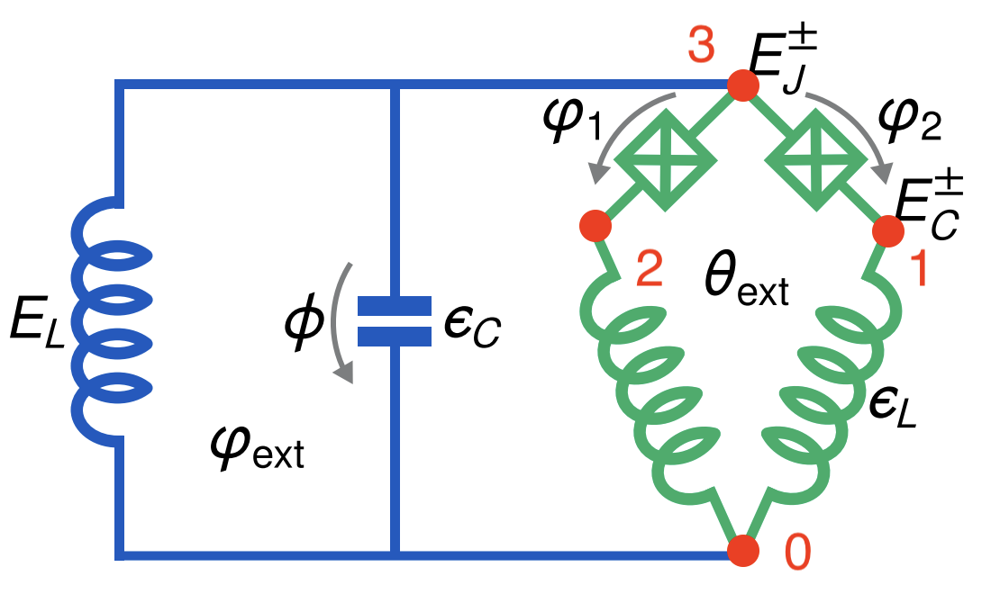
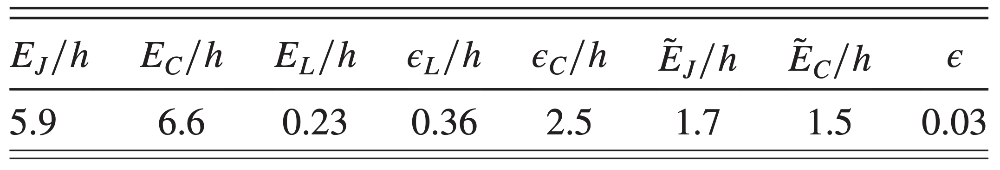
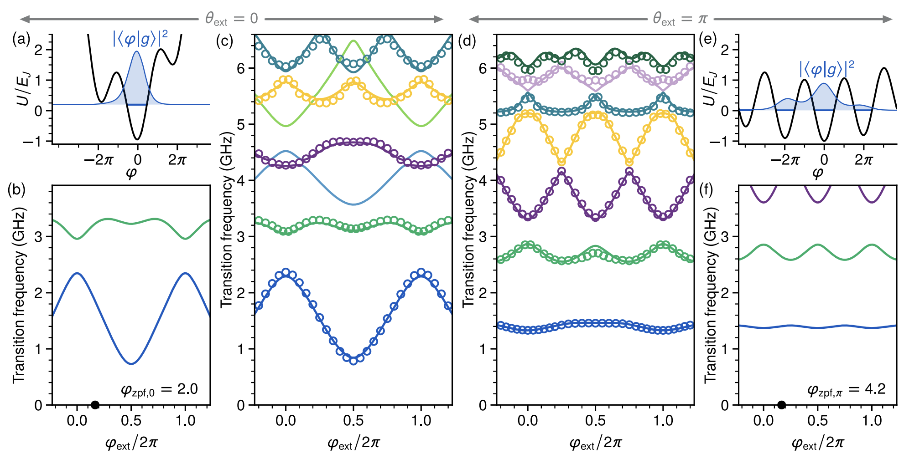

Kite Circuit
In this notebook, we try to reproduce the result of the “Magnifying Quantum Phase Fluctuations with Cooper-Pair Pairing” paper.
Introduction
Smith2022 designed a superconducting circuit that maginfies quantum phase fluctuations with Cooper-pair pairing. We reproduced the energy spectrum of the Kite circuit. The diagram of the circuit is

The parameters for these device in gigahertz unit are as following

Circuit Description
Firstly, we import the SQcircuit and the relavant libraries
[1]:
import SQcircuit as sq
import numpy as np
import matplotlib.pyplot as plt
We define the two inductive loops of the circuit via Loop class. loop1 represents \(\theta_\text{ext}\) and loop2 represents \(\varphi_\text{ext}\).
[2]:
# theta_ext:
loop1 = sq.Loop()
# phi_ext:
loop2 = sq.Loop()
The elements of the circuit can be defined via Capacitor, Inductor, and Junction classes in SQcircuit, and to define the circuit, we use the Circuit class.
[3]:
C = sq.Capacitor(2.5)
CJ = sq.Capacitor(6.6)
JJ1 = sq.Junction(5.9, loops =[loop1])
JJ2 = sq.Junction(5.9, loops =[loop1, loop2])
l1 = sq.Inductor(0.36, loops =[loop1])
l2 = sq.Inductor(0.36, loops =[loop1, loop2])
L = sq.Inductor(0.23, loops=[loop2])
elements = {
(0, 1): [l1],
(0, 2): [l2],
(0, 3): [L, C],
(1, 3): [JJ1, CJ],
(2, 3): [JJ2, CJ]
}
kite = sq.Circuit(elements)
By creating an object of Circuit class, SQcircuit systematically finds the correct set of transformations and basis to make the circuit ready to be diagonalized.
Before setting the truncation numbers for each mode and diagonalizing the Hamiltonian, we can gain more insight into our circuit by calling the description() method. This prints out the Hamiltonian and a listing of the modes, whether they are harmonic or charge modes, and the frequency for each harmonic in GHz (the default unit). Moreover, it shows the prefactors in the Josephson junction part of the Hamiltonian \(\tilde{\textbf{w}}_k\), which helps find the modes decoupled from the
nonlinearity of the circuit.
[4]:
kite.description()
To determine the size of the Hilbert space, we specify the truncation number for each circuit mode via set_trunc_nums() method. Note that this is a necessary step before diagonalizing the circuit.
[5]:
kite.set_trunc_nums([15,15,15])
Circuit Spectrum
We calculate the spectrum of the circuit for \(\theta_\text{ext}=0\) and sweep \(\phi_\text{ext}\).
[6]:
n_eig = 7
phi_ext = np.linspace(-0.25, 1.25, 30)
spec = np.zeros((n_eig, len(phi_ext)))
for i, phi in enumerate(phi_ext):
# print(i)
loop1.set_flux(0)
loop2.set_flux(phi)
spec[:, i], _ = kite.diag(n_eig=n_eig)
[7]:
plt.figure(figsize=(4, 6))
for i in range(n_eig):
plt.plot(phi_ext, (spec[i, :] - spec[0, :]), '.-')
plt.title(r"$\theta_{ext} = 0$", fontsize=13)
plt.xlabel(r"$\Phi_{ext}/\Phi_0$", fontsize=13)
plt.ylabel(r"($\omega_i-\omega_0$)GHz", fontsize=13)
plt.xticks([0, 0.5, 1])
plt.show()
We calculate the spectrum of the circuit for \(\theta_\text{ext}=\pi\) and sweep \(\phi_\text{ext}\).
[8]:
n_eig = 7
phi_ext = np.linspace(-0.25, 1.25, 30)
spec = np.zeros((n_eig, len(phi_ext)))
for i, phi in enumerate(phi_ext):
# print(i)
loop1.set_flux(0.5)
loop2.set_flux(phi)
spec[:, i], _ = kite.diag(n_eig=n_eig)
[9]:
plt.figure(figsize=(4, 6))
for i in range(n_eig):
plt.plot(phi_ext, (spec[i, :] - spec[0, :]), '.-')
plt.title(r"$\theta_{ext} = \pi$", fontsize=13)
plt.xlabel(r"$\Phi_{ext}/\Phi_0$", fontsize=13)
plt.ylabel(r"($\omega_i-\omega_0$)GHz", fontsize=13)
plt.xticks([0, 0.5, 1])
plt.show()
The next cell shows the spectrum from the figure 5 of the paper, which is the same spectrum that SQcircuit calculated for \(\theta_\text{ext}=0\) and \(\theta_\text{ext}=\pi\).
